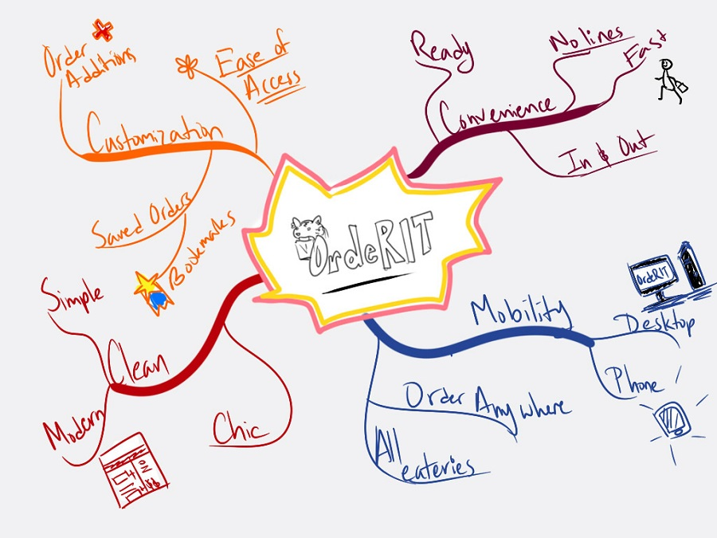
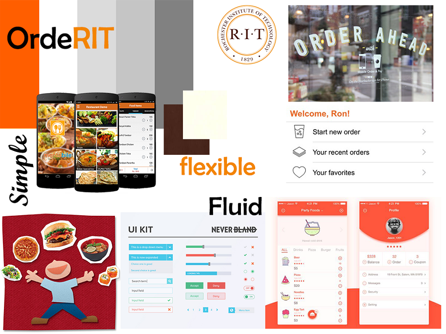
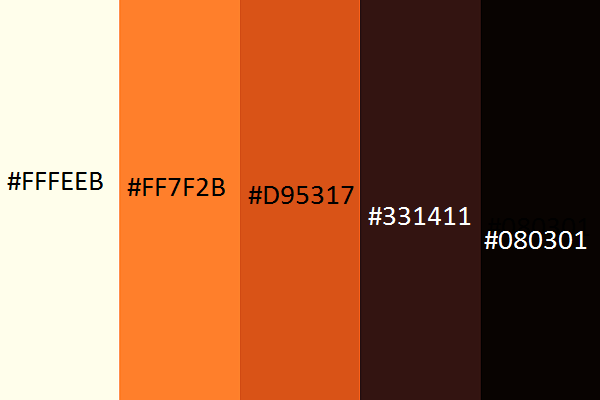
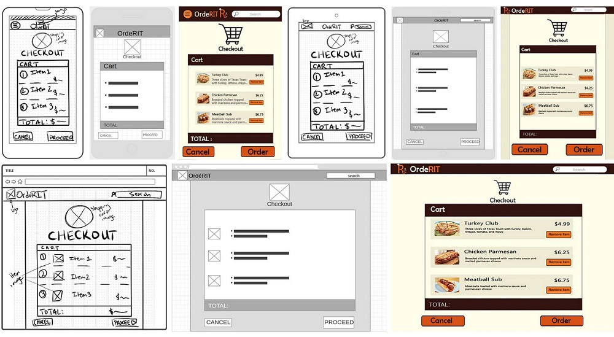

Semester long project that focused on creating a mock food-ordering app for RIT. Did profiles, color scheme, mock-ups, wireframes, and prototypes. Link to full project documentation here
We started with creating profiles of users and use cases in order to cater our design to our audeience. We then moved on to a mind map to pin down the features of our application.
After making a mind map, everyone on the team designed moodboards that we then reviewed collectively in order to sync ourselves on how the application to look and feel.
 As this project was a part of Rochester Institute of Technology's brand, we had a set list of colors to work from. This was a fun challenge for me to design a balanced color palette using mainly orange and brown. After that, we then moved on to making wireframes, mock-ups, and prototypes.
